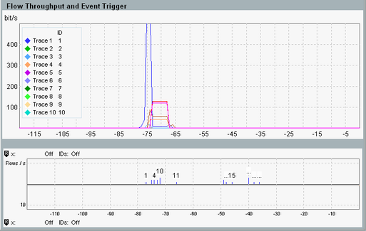

The upper diagram provides a throughput history per connection. You can select up to 10 connections to be displayed in parallel.
The lower diagram displays a history of the open and close events (number of connections opened or closed per second).
The history covers the previous hour. Configure the X-axis to select the time period you are interested in. The two diagrams are synchronized and show the same time period.

Press the softkey "Display" then the hotkey "Traces <-> Flows".
Enable/disable the traces as desired.
Enter the IDs of the connections that you want to display.
The "IP Connectivity" view provides a good overview of all connections and their IDs.
Configure the filter (see "Filtering Evaluated Connections").
Assign the ID 0 to a trace.
The value 0 is not the ID of a specific flow. It selects all flows passing the filter.
| ► | Press the softkey "Display" then the hotkey "Scale X" or "Scale Y". "Scale X" configures the X-axis of both diagrams, "Scale Y" the Y-axis of the upper diagram. |
Press the softkey "Marker" then the hotkey "Ref Marker".
Configure the "Start Events" marker for "open" events and the "End Events" marker for "close" events.
As a result, the IDs of all connections opened at the "Start Events" marker position are listed above the diagram. The IDs of all connections closed at the "End Events" marker position are listed below the diagram.
The upper diagram displays the total throughput (uplink plus downlink) of selected connections vs. time. The X-axis indicates the time in seconds, with 0 corresponding to "now".
The lower diagram indicates the number of connections opened per second as positive bars and the number of connections closed per second as negative bars. The labels above/below the bars indicate the ID of one opened/closed connection. To improve the display of labels, zoom into the diagram (scale the X-axis). To display all IDs of a selected bar, see "Using markers to display IDs in the lower diagram".
Remote command: